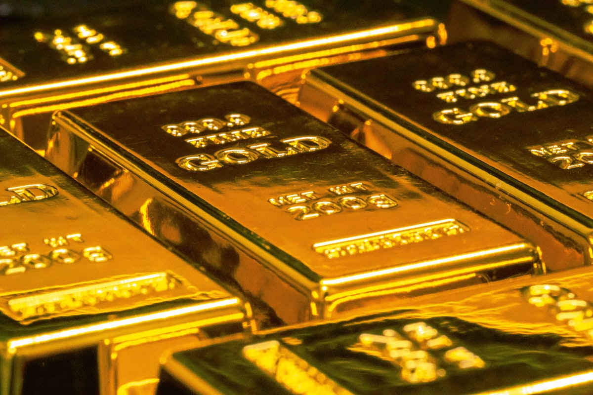
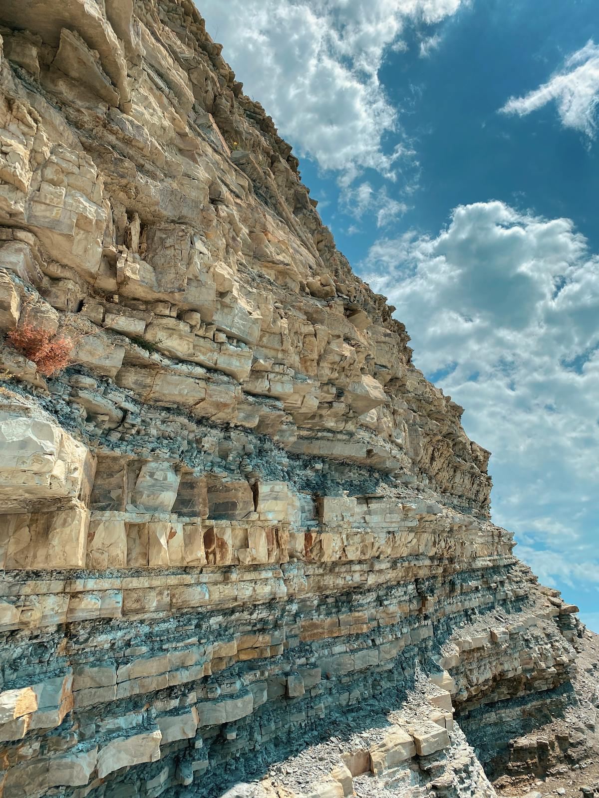
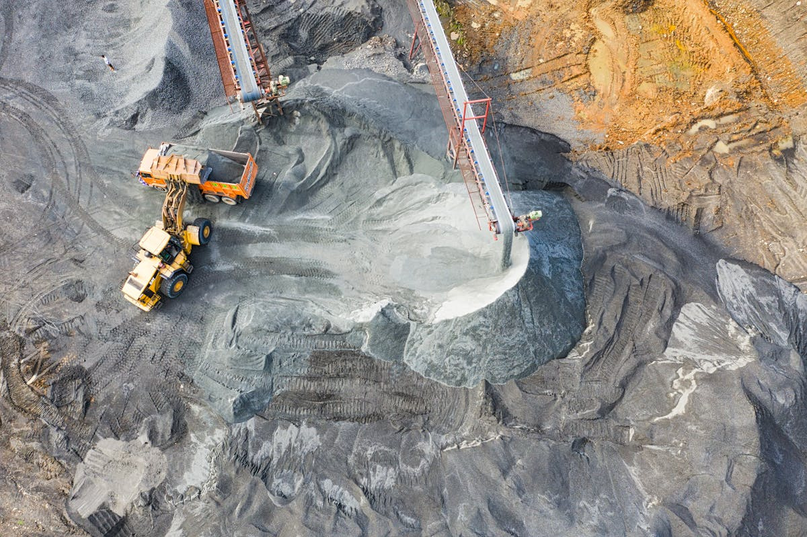
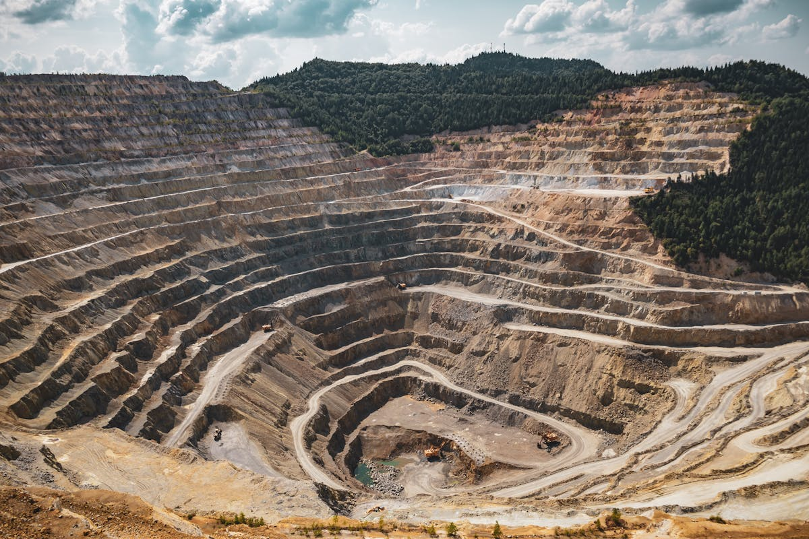
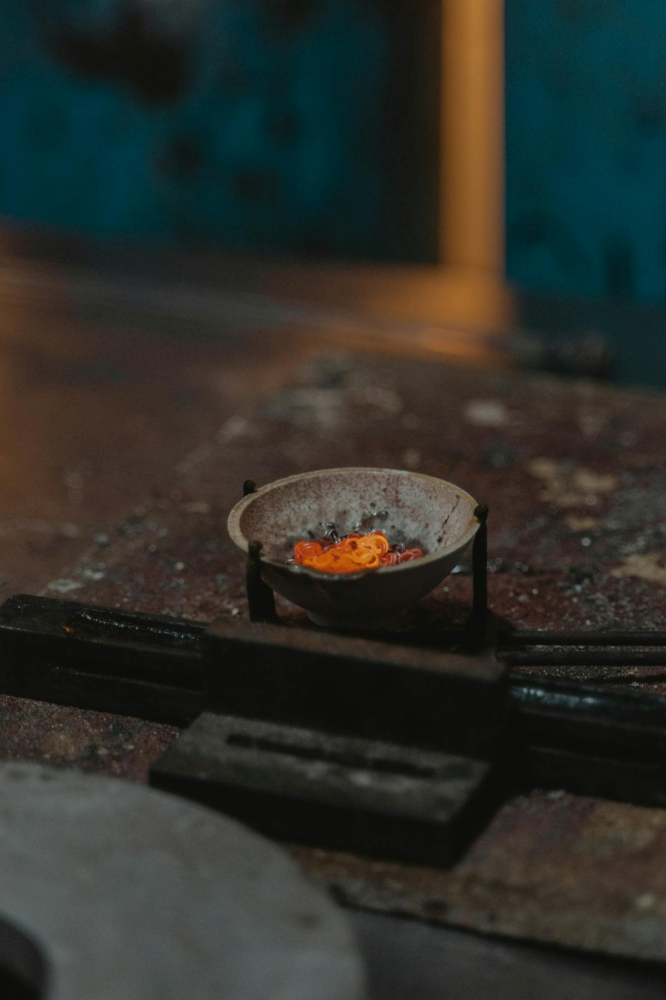
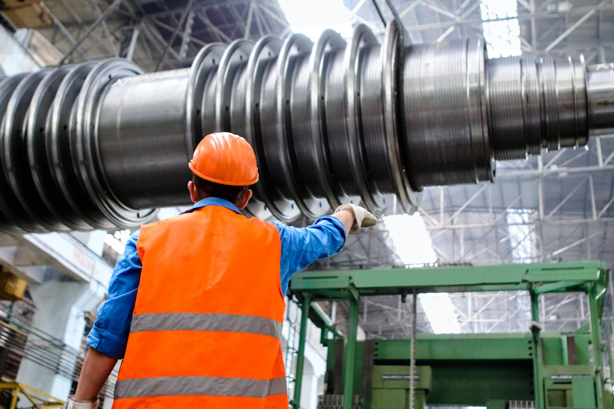

| Part | Topic | ALL | LEGAL | FINANCE | BD | OPS | MGMT |
|---|---|---|---|---|---|---|---|
| 1 | Gold Fundamentals | ● | ● | ● | ● | ● | ● |
| 2 | Deposit Types | ● | ◐ | ◐ | ● | ● | ● |
| 3 | Exploration | ● | ◐ | ● | ● | ● | ● |
| 4 | Resource & Reporting | ● | ● | ● | ● | ◐ | ● |
| 5 | Mining & Processing | ◐ | ○ | ◐ | ◐ | ● | ◐ |
| 6 | Economics & Valuation | ◐ | ◐ | ● | ● | ◐ | ● |
| 7 | Legal & Regulatory | ◐ | ● | ◐ | ● | ◐ | ● |
| 8 | Value Chain & Market | ◐ | ◐ | ● | ● | ○ | ● |
| 9 | Industry Landscape | ○ | ○ | ◐ | ● | ○ | ● |
| 10 | Glossary | Reference — Use as needed | |||||
● Essential ◐ Recommended ○ Optional
Gold (chemical symbol: Au, from Latin aurum) has been valued by humans for over 5,000 years. Understanding its basic physical properties is essential because they directly determine how gold deposits form, how we find gold, and how we extract it.
| Property | Value | Why It Matters |
|---|---|---|
| Density | 19.3 g/cm³ | ~7× heavier than rock. This is why gold sinks to the bottom of rivers and why gravity separation works |
| Chemical Inertness | Does not rust or corrode | Gold survives millions of years of weathering. The rock disappears, but the gold remains |
| Malleability | Most malleable metal | Gold deforms rather than breaks during river transport — flattened into flakes and nuggets |
| Melting Point | 1,064°C | Achievable with basic equipment, enabling on-site smelting |
| Crustal Abundance | 0.004 ppm | Extremely rare. Even a 1 g/t deposit represents 250× natural concentration |
Grade is the concentration of gold in rock or sediment — the single most important number in gold mining.
| Unit | Meaning | Context |
|---|---|---|
| g/t (grams per tonne) | Grams of gold per tonne of rock | Standard for hard rock mining. 1 g/t = 1 ppm |
| g/m³ (grams per cubic metre) | Grams of gold per cubic metre of gravel | Standard for alluvial mining |
| oz/t (ounces per short ton) | Troy ounces per short ton | Older North American reports. 1 oz/t = 34.29 g/t |
| Category | Grade Range |
|---|---|
| Earth's average crustal gold | 0.004 g/t (background) |
| Low grade | 0.5–1.0 g/t |
| Medium grade | 1.0–5.0 g/t |
| High grade | 5.0–20 g/t |
| Bonanza grade | >20 g/t |
| Category | Grade Range |
|---|---|
| Sub-economic | <0.1 g/m³ |
| Low grade | 0.1–0.3 g/m³ |
| Medium grade | 0.3–0.5 g/m³ |
| Good grade | 0.5–1.0 g/m³ |
| High grade | 1.0–2.0 g/m³ |
| Very high grade | >2.0 g/m³ |
| Conversion | Value |
|---|---|
| 1 troy ounce (oz) | 31.1035 grams |
| 1 metric tonne | 1,000 kilograms |
| 1 kilogram of gold | 32.15 troy ounces |
| 1 short ton | 907.185 kilograms |
| Fineness | Purity | Context |
|---|---|---|
| 999.9 | 99.99% — "four nines" | Investment grade, highest purity |
| 995 | 99.5% | LBMA Good Delivery minimum |
| 900 | 90% | Typical doré bar from alluvial operations |
| 750 | 75% (18 karat) | Common jewellery standard |

Primary (Hard Rock / Lode) Deposits — Gold locked inside rock, placed there by geological processes millions of years ago. Must be drilled, blasted, crushed, and chemically processed.
Secondary (Alluvial / Placer) Deposits — Gold freed from rock by natural weathering and concentrated in rivers by gravity. Extracted using simple gravity methods.
| Type | Formation | Grade | Size | Key Examples |
|---|---|---|---|---|
| Orogenic | Hot fluids along deep fault zones during mountain-building | 1–20 g/t | <0.5–50+ Moz | Obuasi (Ghana), Loulo (Mali) |
| Epithermal | Near-surface (<1.5 km), linked to volcanic activity | 1–15 g/t | 0.5–10 Moz | Hishikari (Japan) |
| Porphyry | Massive, low-grade, around cooling magma bodies | 0.3–1.5 g/t | 5–100+ Moz | Grasberg (Indonesia) |
| Carlin-type | Ultra-fine "invisible" gold in carbonate rocks | 1–10 g/t | 1–30 Moz | Carlin Trend (Nevada) |
| VMS | Underwater volcanic centres; gold as by-product | Variable | Variable | — |
Alluvial gold forms when primary deposits are weathered and eroded. Gold particles, being 7× heavier than surrounding sand, sink to the bottom of rivers and concentrate at specific points.
| Type | Distance from Source | Gold Shape | Notes |
|---|---|---|---|
| Eluvial (residual) | 0–50 m | Angular, rough | Source is directly uphill |
| Colluvial (slope) | 50–500 m | Sub-angular | Transitional |
| Alluvial (river) | 500 m–tens of km | Rounded, flat | Classic placer deposits |

West Africa sits on the West African Craton — one of Earth's oldest continental cores (>2.0 billion years). The southern Leo-Man Shield hosts the Birimian greenstone belts, among the most gold-endowed geological formations on Earth.
The key event: the Eburnean Orogeny (~2.15–2.07 billion years ago) created deep crustal shear zones that channelled gold-bearing fluids upward, depositing the orogenic gold deposits we mine today.
| Belt | Location | Key Deposits | Significance |
|---|---|---|---|
| Ashanti Belt | Ghana | Obuasi (>30 Moz), Tarkwa | Reference for orogenic gold |
| Senegalo-Malian Shear Zone | Mali–Senegal | Loulo (~15+ Moz), Fekola (~10+ Moz) | Major alluvial and hard rock gold province |
| Siguiri Basin | Guinea | Siguiri (>10 Moz) | Major gold-producing region |
| Ity-Bondoukou Belt | Côte d'Ivoire | Ity (>5 Moz), Yaouré (~3 Moz) | Rapidly growing exploration frontier |
| Burkina Faso Belts | Burkina Faso | Essakane (>10 Moz) | Regional context |

Gold exploration follows a systematic funnel: start wide, narrow down progressively. At each stage, you spend more money but reduce uncertainty. The industry average success rate from grassroots to economic discovery is roughly 1 in 500 to 1 in 1,000.
| Stage | Activities | Cost | Timeline | Key Deliverable |
|---|---|---|---|---|
| 1. Desktop Study | Review geological maps, satellite imagery, published data | $50K–$500K | 1–6 months | Target areas identified |
| 2. Remote Sensing | Satellite analysis, airborne magnetics, gravity | $100K–$2M | 3–12 months | Structural maps, anomaly targets |
| 3. Geological Mapping | Field geologists record rocks, structures, alteration | $200K–$1M | 2–6 months | Detailed geological maps |
| 4. Geochemistry | Stream sediment, soil sampling (grid), rock chip | $500K–$5M | 6–18 months | Gold-in-soil anomalies |
| 5. Ground Geophysics | IP, EM — detect sulfide mineralization through soil | $500K–$3M | 3–12 months | Refined drill targets |
| 6. Initial Drilling | Wide-spaced (100–200 m) RC drilling | $2M–$10M | 6–18 months | Discovery confirmation |
| 7. Resource Drilling | Infill RC + DD at 25–50 m spacing, 3D modelling | $10M–$50M | 1–3 years | JORC/NI 43-101 Resource |
| 8. Feasibility | PEA → PFS → BFS engineering studies | $2M–$30M | 1–3 years | Technical/economic viability |
The desktop study is where every exploration program begins — and where the best geologists earn their keep before spending a dollar in the field. The goal is to compile and analyze all existing information about a region to identify the most promising areas for follow-up.
Why it matters: A thorough desktop study can eliminate 90% of an area from consideration before any fieldwork begins. The best exploration geologists find deposits that others missed — often because they read reports that were sitting in a government archive for decades. This stage is extremely high-ROI: $50K–$500K spent here can save $5M+ in wasted field programs.
Key deliverables: Target area map, compilation database, summary report ranking targets by priority.
Remote sensing bridges the gap between desktop research and boots-on-the-ground fieldwork. It uses satellite and airborne instruments to detect geological features and mineral signatures invisible to the naked eye.
Why it matters: Airborne magnetic surveys are arguably the single most important geophysical tool in West African gold exploration. The Birimian greenstone belts that host 95%+ of West Africa's gold are strongly magnetic, and structures that control gold mineralization create clear magnetic signatures. A regional aeromagnetic survey can define drill targets that would take years to find through surface methods alone.
Key deliverables: Structural interpretation maps, alteration anomaly maps, prioritized target list for field follow-up.
This is when geologists finally walk the ground. Geological mapping is the fundamental skill of exploration — everything else builds on it. The geologist's job is to observe, record, and interpret what the rocks are telling them.
Why it matters: No amount of remote sensing or geophysics can replace a good geologist on the ground. Mapping reveals the 3D geometry of the geology — how rocks are folded, faulted, and intruded — which controls where gold is deposited. A well-mapped project also builds credibility with investors and joint venture partners.
Challenges in West Africa: Deep laterite weathering means rock outcrop is rare (sometimes <5% of the surface). Geologists must rely on road cuts, river beds, artisanal pits, and termite mounds (which bring subsurface material to surface) to see the geology.
Key deliverables: Geological map (1:10,000 to 1:50,000 scale), structural interpretation, sample locations, field report with target recommendations.
Geochemistry is the process of systematically collecting and analyzing earth materials to find chemical signatures of buried gold mineralization. It is the workhorse method for defining drill targets in West Africa.
Why it matters: A well-executed soil sampling program can define gold anomalies that directly correspond to underlying mineralization — even through 20–40 m of barren laterite cover. The key is understanding what you're sampling: in lateritic terrain, gold is often concentrated in specific soil horizons, and sampling the wrong horizon gives false negatives.
Cost context: A regional stream sediment survey (500–1,000 samples at $30–50/sample including collection) costs $30K–$80K and can cover hundreds of km². A detailed soil sampling grid (5,000–20,000 samples) over a priority target costs $300K–$2M. This is one of the highest-value expenditures in exploration.
Key deliverables: Geochemical anomaly maps, gold-in-soil contour plots, target ranking for drill testing.
Ground geophysics provides higher-resolution subsurface information than airborne surveys, helping to precisely locate and define drill targets. At this stage, you're spending real money and need confidence in your targets.
Why it matters: IP surveys are particularly powerful in West Africa because orogenic gold deposits are almost always associated with sulfide minerals. A coincident gold-in-soil anomaly + IP chargeability high + structural target from magnetics = a high-priority drill target. This multi-dataset approach dramatically improves drill success rates.
Typical survey design: IP lines are surveyed at 100–200 m spacing with dipole-dipole or pole-dipole arrays. A single IP line costs $3K–$8K depending on terrain and line length. A typical ground IP program covers 50–200 line-km.
Key deliverables: IP chargeability and resistivity sections, integrated target maps combining geology + geochemistry + geophysics, drill hole location plans.
This is the moment of truth. After all the desktop analysis, remote sensing, mapping, sampling, and geophysical surveys, you finally put steel in the ground to test whether there is gold at economic grades and widths.
Why it matters: This is where the vast majority of exploration programs end. Statistically, only about 1 in 10 initial drilling programs find mineralization worth following up, and only about 1 in 100 grassroots targets becomes an economic deposit. A "discovery hole" — one that intersects significant gold mineralization over economic widths — can transform a project overnight. A single result like "48m @ 3.2 g/t gold from 52m depth" can multiply a project's value 10x.
What kills a target: Consistently sub-economic grades (<0.5 g/t over narrow widths), erratic gold distribution with no geological continuity, or metallurgical issues (refractory gold that doesn't respond to standard processing).
Key deliverables: Drill results (significant intercepts), cross-sections, geological model, decision to advance or drop the target.
If initial drilling confirms a discovery, the next step is to drill enough holes to define the size, shape, and grade of the deposit so that a Mineral Resource Estimate can be prepared.
Why it matters: The Mineral Resource Estimate (MRE) is the single most important document in the life of a mining project. It classifies the deposit into:
The MRE must be prepared by a Competent Person (CP) under the JORC Code or a Qualified Person (QP) under NI 43-101. The CP/QP takes personal legal responsibility for the estimate.
Cost context: Resource drilling is the most capital-intensive exploration stage. A typical program involves 30,000–100,000 m of combined RC + DD drilling at $30–200/m, plus geological modelling, metallurgical testing, and the resource estimate itself.
Key deliverables: JORC/NI 43-101 Mineral Resource Estimate, 3D geological model, metallurgical test results, cross-sections and long-sections showing ore zone geometry.
Feasibility studies are the engineering and economic analyses that determine whether a mineral resource can be profitably mined. They progress through three levels of increasing detail and cost.
Key deliverables: Technical report (JORC/NI 43-101 compliant), financial model, mine plan, environmental and social impact assessment, risk register, recommendation to proceed (or not) to construction.
| Method | Depth | Sample Quality | Cost | Use |
|---|---|---|---|---|
| RAB (Rotary Air Blast) | 10–50 m | Low | $10–20/m | Reconnaissance, penetrating laterite |
| RC (Reverse Circulation) | 50–300 m | Good | $30–80/m | Main workhorse for West Africa |
| DD (Diamond Drilling) | >2,000 m | Highest (core) | $80–200/m | Detailed geology, metallurgical samples |
Fire assay has been used for over 500 years to determine gold content:
Gold is distributed extremely unevenly in deposits. A small sample may miss gold entirely, or include one large particle that inflates the result. This is the biggest challenge in estimating alluvial gold grades. Solution: use large-volume (bulk) samples.
Remote sensing is one of the most powerful and cost-effective tools in modern gold exploration. It allows geologists to analyze vast areas from space before ever setting foot on the ground.
| Platform | Resolution | Key Capabilities | Cost |
|---|---|---|---|
| Landsat 8/9 (NASA) | 30 m multispectral, 15 m pan | Iron oxide mapping, vegetation anomalies, regional geology | Free |
| Sentinel-2 (ESA) | 10–20 m multispectral | Similar to Landsat but higher resolution; lithological mapping | Free |
| ASTER (NASA/Japan) | 15–90 m, 14 bands | Best free platform for alteration mineral mapping (clays, iron oxides, carbonates) | Free |
| WorldView-3 (Maxar) | 0.3 m visible, 3.7 m SWIR | Industry-leading mineral discrimination; can identify specific alteration assemblages from space | $15–30/km² |
| PlanetScope | 3 m daily | Very high temporal resolution; monitor site changes, vegetation stress | $5–15/km² |
| ALOS PALSAR (JAXA) | 10–25 m SAR | Radar penetrates clouds and vegetation; structural mapping in tropical West Africa | Free/Low cost |
Gold deposits create "alteration halos" — zones of chemically altered rock around the mineralization. These alteration minerals have distinct spectral signatures detectable from space:
| Alteration Type | Minerals | Spectral Band | Significance |
|---|---|---|---|
| Iron oxide | Hematite, goethite, jarosite | VNIR (0.4–1.0 μm) | Indicates weathered sulfide zones; "gossans" are classic surface indicators of underlying mineralization |
| Hydroxyl (clay) | Sericite, kaolinite, illite | SWIR (2.0–2.5 μm) | Hydrothermal alteration — the "plumbing system" that carried gold-bearing fluids |
| Carbonate | Calcite, dolomite, ankerite | SWIR (2.3–2.5 μm) | Carbonate alteration associated with orogenic gold |
| Silicification | Quartz flooding | TIR (8–12 μm) | Direct host of gold in many orogenic deposits |
Gold deposits in West Africa are controlled by major crustal structures (shear zones, faults). Remote sensing maps these structures through:
The most powerful approach combines multiple data layers in a Geographic Information System (GIS):
A growing number of companies are applying AI/ML to mineral exploration:
| Company | Approach | Notable Results |
|---|---|---|
| KoBold Metals | ML-driven target generation for battery metals | $1.2B+ raised; Mingomba discovery (Zambia) |
| Ivanhoe Electric | Proprietary geophysics + data science | Typhon copper deposit (USA) |
| Earth AI | ML for drill targeting in brownfield settings | Multiple verified targets in Australia |
| Goldspot Discoveries | AI analytics for resource companies | Multiple successful predictions |
Key applications:
This is one of the most important concepts in mining. The distinction has legal, financial, and technical implications.
| Category | Confidence | Can Be Used For |
|---|---|---|
| Inferred | Low — geologically reasonable but uncertain | PEA only. Cannot be used in feasibility studies |
| Indicated | Moderate — reasonable assumption of continuity | Pre-Feasibility Study (PFS) |
| Measured | High — known with high confidence | Feasibility Study (FS/BFS) |
| Category | Derived From | Confidence |
|---|---|---|
| Probable Reserve | Indicated Resource | Moderate |
| Proven Reserve | Measured Resource | High |
| Standard | Jurisdiction | Exchange | Qualified Professional |
|---|---|---|---|
| JORC | Australia | ASX | Competent Person (CP) |
| NI 43-101 | Canada | TSX, TSX-V | Qualified Person (QP) |
| S-K 1300 | USA | NYSE, NASDAQ | Qualified Person |
| Study | Accuracy | Based On | Purpose | Cost |
|---|---|---|---|---|
| PEA | ±35–50% | Inferred + Indicated | Worth investigating further? | $0.5–2M |
| PFS | ±25–30% | Min. Indicated | Likely economic? Begin permitting | $2–10M |
| DFS / BFS | ±10–15% | Measured + Indicated | Final investment decision; required by banks | $5–30M |

The most common method in West Africa, especially for near-surface deposits with thick oxidized zones.
| Parameter | Description | Typical Values |
|---|---|---|
| Overall Slope Angle | Angle from pit bottom to rim | Laterite: 35–45°, Fresh rock: 45–60° |
| Bench Height | Height of each step | Small: 5–6 m, Large: 10–15 m |
| Strip Ratio | Waste : Ore (tonnes) | Economic: 3:1 to 10:1 |
| Min Pit Bottom Width | Space for equipment | 30–40 m minimum |
Used when deposits extend too deep for economic open pit mining. Most common method for West African gold:
ASM represents one of the oldest and most widespread forms of mining globally, employing an estimated 15–20 million people worldwide. In Africa alone, ASM supports the livelihoods of over 10 million miners and their families.
| Category | Workforce | Equipment | Annual Output |
|---|---|---|---|
| Artisanal (hand mining) | 5–50 workers | Hand tools, gold pans, sluice boxes | 0.5–5 kg Au/year |
| Small-scale mechanized | 50–300 workers | Excavator, trommel, wash plant | 5–50 kg Au/year |
| Semi-industrial | 100–500+ workers | Multiple excavators, processing plant, generator | 50–500 kg Au/year |
ASM-produced gold enters the formal supply chain through licensed buying offices, government-approved trading houses, or — in many cases — informal channels. Efforts to formalize ASM supply chains include the LBMA Responsible Gold Guidance, the OECD Due Diligence Guidance, and national certification schemes in countries like the DRC (ITSCI), Colombia, and several West African nations.
Gold processing transforms raw ore or alluvial material into refined gold. The choice of processing method depends on the ore type (free-milling vs. refractory), gold particle size (coarse vs. fine), grade, and scale of operation. Most operations use a combination of methods in sequence.
| Ore Type | Gold Characteristics | Recommended Method | Expected Recovery |
|---|---|---|---|
| Alluvial gravel | Coarse, free gold (>100 μm) | Gravity separation | 70–90% |
| Oxidized rock ore | Free gold, moderate grade | Gravity + CIL/CIP | 90–96% |
| Fresh (sulfide) rock ore | Gold locked in sulfides | Flotation + CIL/CIP or roasting | 85–95% |
| Low-grade, large tonnage | Fine gold, oxide ore | Heap leaching | 50–75% |
| Refractory ore | Gold locked in arsenopyrite/pyrite | Oxidation (POX/BIOX/roasting) + CIL | 80–95% |
| Double-refractory | Gold locked in sulfides + carbonaceous (preg-robbing) | Ultra-fine grinding + oxidation + CIL | 70–90% |
Exploits the density difference between gold (19.3 g/cm³) and waste minerals (~2.65 g/cm³). The oldest and safest gold recovery method, and the foundation of alluvial gold mining.
How gravity separation works: Gold is approximately 7x denser than the surrounding sand, gravel, and rock. When gold-bearing material is agitated in water, gold particles settle faster and concentrate at the bottom. Every gravity device exploits this principle in different ways.
| Equipment | How It Works | Recovery | Best For | Throughput |
|---|---|---|---|---|
| Gold Pan | Manual swirling in water; tilt to wash away light material | 50–70% (operator-dependent) | Prospecting, sampling | 0.01 t/hr |
| Sluice Box | Inclined trough with riffles; gold settles behind riffles, lighter material washes away | 60–80% (coarse gold) | ASM, alluvial | 5–50 t/hr |
| Jig | Pulsating water stratifies particles by density in repeated cycles | 70–85% | Medium scale | 10–100 t/hr |
| Spiral Concentrator | Slurry flows down a helical trough; centrifugal + gravity separates heavy from light | 50–70% | Continuous operations, no power needed | 1–5 t/hr per spiral |
| Shaking Table | Asymmetric reciprocating motion on an inclined deck with riffles separates by density and size | >95% coarse gold | Final cleaning / upgrading of concentrates | 0.5–2 t/hr |
| Centrifugal Concentrator (Knelson/Falcon) | Enhanced gravity field (60–200G) forces fine gold into retention zones | >95% including fine gold (<50 μm) | Industrial and semi-industrial | 1–100 t/hr |
| Trommel | Rotating cylindrical screen; classifies material by size before gravity concentration | N/A (classification only) | Pre-screening alluvial gravel | 50–300 t/hr |
The foundation of industrial gold processing. Used for approximately 80% of global gold production. Cyanide is the only reagent that can economically dissolve fine gold from large volumes of ore.
Gold dissolves in dilute cyanide solution in the presence of oxygen — a reaction known as Elsner's equation:
4Au + 8NaCN + O₂ + 2H₂O → 4Na[Au(CN)₂] + 4NaOH
This reaction is slow (24–72 hours for full dissolution) and requires careful control of pH (10–11, maintained with lime to prevent HCN gas generation), dissolved oxygen, and cyanide concentration.
Recovery: 90–96% for free-milling (oxide) ores
Capital cost: $200–500M+ for a 2–5 Mtpa CIL plant
Operating cost: $15–30/t ore processed (excluding mining)
Cyanide consumption: 0.5–2.0 kg NaCN per tonne of ore
Flotation is used when gold is finely disseminated within sulfide minerals (pyrite, arsenopyrite) and cannot be liberated by grinding alone. It is a pre-concentration step that produces a sulfide concentrate for further processing.
Typical results: Flotation concentrates 90%+ of the gold into 5–15% of the original ore mass, producing a concentrate grading 20–100 g/t gold (compared to 1–5 g/t head grade). This concentrate is then processed by CIL, roasting, or pressure oxidation.
A lower-cost alternative for low-grade (0.3–1.5 g/t), large-tonnage, oxidized ores. Heap leaching sacrifices recovery for dramatically lower capital costs.
Recovery: 50–75% (lower than CIL but at much lower capital cost)
Capital cost: $50–150M for a 5–20 Mtpa heap leach operation
Operating cost: $5–12/t ore (significantly lower than CIL)
Best suited for: Arid climates (rain dilutes solution), oxide ores (sulfide ores don't leach well), large deposits with low grades
Some gold ores are "refractory" — the gold is physically locked inside sulfide mineral crystals (mainly arsenopyrite and pyrite) and cannot be dissolved by cyanide without first breaking down the sulfide host. Refractory ores require an oxidation step before cyanide leaching.
| Method | How It Works | Capital Cost | Operating Cost | Best For |
|---|---|---|---|---|
| Roasting | Heat concentrate to 500–700°C in air; sulfides oxidize to iron oxide, releasing gold | High ($300M+) | Moderate | High-grade concentrates, established technology |
| POX (Pressure Oxidation) | Autoclave at 200°C, 3,000 kPa with oxygen; sulfides dissolve in sulfuric acid | Very high ($400M+) | High | Arsenopyrite-rich ores, best recovery |
| BIOX (Biological Oxidation) | Bacteria (Acidithiobacillus) eat sulfides over 4–6 days in stirred reactors | Moderate ($200M+) | Low | Lower-grade concentrates, lower CAPEX than POX |
| Ultra-fine grinding | Grind to <10 μm to physically liberate gold from sulfide crystals | Moderate | Moderate-high (energy) | Moderately refractory ores |
Smelting is the final step at the mine site — converting gold concentrate into a semi-pure gold bar (doré) for shipment to a refinery.
Borax Smelting — the most important method for alluvial and small-scale operations:
| Concentrate Type | Borax | Soda Ash | Silica | Other |
|---|---|---|---|---|
| Clean gravity concentrate (>30% Au) | 2:1 flux:concentrate | — | — | Minimal flux needed |
| Iron-rich concentrate | 3:1 | 10% | — | Add manganese dioxide as oxidant |
| Sulfide-rich concentrate | 3:1 | 15% | 10% | Add niter (KNO₃) to oxidize sulfides |
| Silica-rich concentrate | 2:1 | 20% | — | Extra soda ash to flux silica |
Output purity: 85–95% Au (doré), which must be sent to a refinery for further purification to 99.5%+ (London Good Delivery standard) or 99.99% (investment grade).
Industrial smelting at large mines uses induction furnaces (50–500 kg capacity) that can process large batches of electrowinning sludge or gravity concentrate in 2–4 hours. Doré bars are typically 20–30 kg and are shipped under armed escort to a licensed refinery.
Borax smelting is the preferred alternative to mercury amalgamation — non-toxic, higher recovery (90%+ vs mercury's 30–60%), and extremely low equipment cost ($100–1,000). The global movement to eliminate mercury from ASM (Minamata Convention) is driving rapid adoption of borax methods.
| Method | Capital Cost | Operating Cost | Recovery | Min. Grade | Scale |
|---|---|---|---|---|---|
| Gravity only | $0.1–2M | $5–15/t | 60–85% | 0.5 g/t alluvial | ASM to small mine |
| Gravity + CIL | $200–500M | $20–40/t | 90–96% | 1.0 g/t rock | Industrial |
| Heap leach | $50–150M | $5–12/t | 50–75% | 0.3 g/t rock | Large, low-grade |
| Flotation + CIL | $300–600M | $25–45/t | 85–95% | 1.5 g/t rock | Industrial, sulfide ores |
| Flotation + POX + CIL | $500M+ | $35–55/t | 85–95% | 2.0 g/t rock | Large, refractory |
What it is: A semi-pure gold-silver alloy bar produced at the mine through primary smelting. It is the standard product that leaves a mine site.
| Source Type | Typical Purity |
|---|---|
| Major hard rock mines | 90–95% Au |
| Mid-tier hard rock mines | 75–90% Au |
| Alluvial mines | 80–92% Au |
| ASM hand smelting | 70–90% Au |
Mining is one of the most hazardous industries globally. Every mining team member must understand and prioritize safety.
| Hazard Category | Specific Risks | Prevention |
|---|---|---|
| Ground failure | Pit wall collapse, underground roof fall, trench cave-in | Proper slope design, ground support, no entry to unsupported areas |
| Mobile equipment | Collision, rollover, struck-by incidents | Traffic management plan, spotters, seatbelts, training |
| Drowning | Flooded pits, water-filled trenches, river operations | Dewatering, barriers, life jackets for alluvial operations |
| Falls | Working at height on equipment, steep pit walls | Fall protection, ladders, access controls |
| Heat stress | West Africa temperatures regularly exceed 40°C | Hydration protocols, shade, work-rest cycles, early starts |
| Dust | Silicosis from prolonged quartz dust exposure | Wet drilling, dust suppression, respiratory protection |
| Chemical | Cyanide, fuel, mercury (in ASM areas) | SDS availability, training, PPE, proper storage, cyanide code |
| Biological | Malaria, waterborne diseases, snake/scorpion bites | Prophylaxis, treated nets, first aid kits, medical evacuation plan |
| Explosive | Misfired charges, improper storage | Licensed blasters only, strict procedures, magazine security |
| Site Type | Required PPE |
|---|---|
| All mine sites | Hard hat, safety boots (steel toe), high-visibility vest, safety glasses |
| Drilling operations | + hearing protection, dust mask/respirator |
| Processing plant | + chemical-resistant gloves, face shield (near chemicals) |
| Alluvial/river operations | + life jacket, waterproof boots |
| Laboratory (fire assay) | + heat-resistant gloves, full face shield, leather apron |
Every mine site must have:
Mining operations in West Africa face specific security challenges:
Water is both essential for mining operations and a critical environmental concern. In West Africa, water management is complicated by extreme seasonal variation — months of drought followed by intense rainy seasons.
| Operation | Water Use | Typical Consumption |
|---|---|---|
| Drilling (RC/DD) | Cooling, dust suppression, sample recovery | 5,000–20,000 L/day per rig |
| Processing (gravity) | Sluice boxes, jigs, wash plants | 50–200 m³/hour |
| Processing (CIL) | Slurry makeup, reagent mixing | 500–2,000 m³/hour |
| Dust suppression | Haul roads, stockpiles | Variable, 10,000–50,000 L/day |
| Camp and domestic | Drinking, cooking, sanitation | 100–200 L/person/day |
| Season | Challenge | Management |
|---|---|---|
| Dry season (Nov–Apr) | Water scarcity for processing; dust; reduced river flow | Water storage, boreholes, increased recycling |
| Rainy season (May–Oct) | Pit flooding, road washout, tailings dam overflow risk, increased malaria | Dewatering capacity, drainage infrastructure, road maintenance, stormwater diversions |
| Transition periods | Flash flooding risk, unstable pit walls from saturation | Monitoring, restricted access, slope stability assessment |

| Metric | Definition | Includes |
|---|---|---|
| C1 Cash Cost | Direct cost per ounce | Mining + Processing + Site G&A + Refining + Royalties |
| AISC | All-In Sustaining Cost | C1 + Sustaining Capex + Corporate G&A + Sustaining Exploration |
| AIC | All-In Cost | AISC + Growth Capex + Non-sustaining Exploration |
Revenue = Ore processed (t) × Head grade (g/t) × Recovery (%) × Gold price ($/oz) ÷ 31.1035
| Metric | What It Means | Minimum Threshold |
|---|---|---|
| NPV (Net Present Value) | Present value of all future cash flows minus investment. NPV > 0 = project creates value | Positive, at conservative gold price |
| IRR (Internal Rate of Return) | Discount rate at which NPV = 0 | 15–25% (higher for risky jurisdictions) |
| Payback Period | Time to recover initial investment | Banks want ≤3–5 years |
| Method | Best For | How It Works |
|---|---|---|
| DCF / NPV | Development to production | Discount all future cash flows to present |
| EV / Resource oz | Exploration to development | Enterprise Value ÷ Total ounces |
| Comparable Transactions | Any stage | What did similar projects trade for? |
| P/NAV | Public companies | Share price ÷ Net Asset Value per share |
| Stage | EV per Resource Ounce | P/NAV Multiple |
|---|---|---|
| Grassroots exploration | $5–20/oz | — |
| Advanced exploration | $20–150/oz | 0.1–0.3× |
| Development (feasibility complete) | $100–250/oz | 0.3–0.7× |
| Production | $150–400/oz | 0.8–1.2× |
Monthly production: 2,000 oz Au Mining cost: $320,000 Processing cost: $375,000 Site G&A: $180,000 Royalty (5% × revenue): $200,000 Refining fees: $10,000 ─────────────────────────────────────────────── Total C1 Cash Cost: $1,085,000 → $542/oz Sustaining capex: $120,000 Sustaining exploration: $50,000 ─────────────────────────────────────────────── Total AISC: $1,255,000 → $628/oz At $2,950/oz gold price: Margin per ounce: $2,322 Monthly pre-tax profit: $4,644,000
| Country | Royalty | Gov't Free Carry | Corporate Tax |
|---|---|---|---|
| Mali | 3% | 10% + option 10% | 25% |
| Guinea | 5% | 15% | 25% |
| Cameroon | 4% | 10% | 30% |
| CDI | 3–5% (sliding) | 10% | 25% |
| Namibia | 3–5% | — | 32% |
| Botswana | 3% | 15% option | 22% |
In most African jurisdictions, minerals belong to the state. Companies must obtain licences to explore and mine.
| Licence Type | Activities | Area | Duration |
|---|---|---|---|
| Reconnaissance | Non-invasive surveys | Large (1000s km²) | 1–2 years |
| Exploration Permit | Surveys, sampling, drilling | 100–1,000 km² | 2–4 years (renewable) |
| Mining / Exploitation Permit | Full-scale mining | Defined by resource | 15–25 years (renewable) |
| Type | Basis | Common Rates |
|---|---|---|
| Ad Valorem / GRR | % of gross revenue | 3–6% |
| NSR (Net Smelter Return) | % of revenue after smelting/refining costs | 1–5% |
| NPI (Net Profit Interest) | % of net profit after all costs | 5–20% |
| Government Free Carry | Free equity stake in mining company | 10–20% |
The most common deal structures in exploration-stage mining:
| Term | Definition | Why It Matters |
|---|---|---|
| NSR Royalty | Ongoing royalty on production to original holder | Significantly reduces project economics. Negotiate caps/buybacks |
| Dilution | What happens if a party doesn't fund its share | Must be precisely defined with formula |
| Change of Control | What happens if a party is acquired | Can trigger consent or pre-emptive rights |
| Operatorship | Who manages day-to-day operations | Operator has significant control — ensure approval thresholds |
| Anti-dilution | Protection below a threshold (usually 10%) | Party typically converts to a royalty |
| Tail Period | Rights retained after termination | Creates long-term obligations — negotiate carefully |
Required before any mining permit is granted. Includes: baseline environmental studies (12–24 months), impact assessment, mitigation plans, closure plan, public consultation, and independent review.
| Country | Key Points |
|---|---|
| CDI | Mining Code 2014 (amended 2023). SARL recommended. EP valid 4 yrs, renewable 2×. 10% free carry. Strong French-language legal system |
| Namibia | Max 4 exploration permits per company. UBO disclosure required. Well-established, investor-friendly framework |
| Botswana | 15% carried interest option. Strong rule of law, one of Africa's most stable |
| Mali | Code 2019 (amended 2023). Gov't minimum raised to 20%. Royalty 3%. Export permits mandatory. Political risk remains elevated |

| Specification | Requirement |
|---|---|
| Minimum fineness | 995.0 (99.5% pure) |
| Weight range | 350–430 troy ounces (~10.9–13.4 kg) |
| Marks | Serial number, refiner's stamp, fineness, year |
Only ~70 refineries worldwide hold LBMA accreditation. Gold from these facilities is accepted universally. Non-LBMA gold trades at a discount.
Dubai (DMCC) is the world's second-largest physical gold trading hub after Switzerland.
| Benchmark | Description |
|---|---|
| LBMA Gold Price | Set twice daily (10:30 AM, 3:00 PM London). The global reference |
| COMEX Futures | Most actively traded gold futures (CME Group) |
| Spot Price | Real-time traded price on global markets |
All LBMA refineries must conduct due diligence on gold supply chains, based on the OECD Five-Step Framework:

| Tier | Market Cap | Production | Examples |
|---|---|---|---|
| Major | >$10B | >1 Moz/year | Newmont, Barrick, Agnico Eagle |
| Mid-Tier | $2–10B | 300K–1M oz | B2Gold, Endeavour, Kinross |
| Junior Producer | $500M–2B | 100K–300K oz | Perseus Mining, Galiano Gold |
| Junior Explorer | <$500M | Pre-production | — |
| Private / ASM | — | Variable | Most junior miners start here |
| Company | HQ | Key W. Africa Assets | Production |
|---|---|---|---|
| Barrick Gold | Canada | Loulo-Gounkoto (Mali) | ~600K oz/yr from Mali |
| Newmont | USA | Ahafo, Akyem (Ghana) | ~1M oz/yr from Ghana |
| B2Gold | Canada | Fekola (Mali) | ~600K oz/yr |
| Endeavour Mining | UK | Ity, Lafigué (CDI) | ~1.4M oz/yr total |
| AngloGold Ashanti | South Africa | Siguiri (Guinea) | ~3M oz/yr total |
| Perseus Mining | Australia | Yaouré (CDI) | ~500K oz/yr |
| Source | Stage | Size | Dilution |
|---|---|---|---|
| Founder's capital | Grassroots | $0.5–5M | None |
| Angel / Seed | Early exploration | $1–5M | High |
| IPO (TSX-V/ASX/AIM) | Resource definition | $5–50M | Moderate-High |
| Streaming | Development | $50–500M | Non-dilutive (but gives up revenue) |
| Royalty financing | Development | $10–100M | Non-dilutive (permanent cost) |
| Project finance | Construction (needs BFS) | $100M–1B+ | Non-dilutive (debt) |
| JV / Earn-in | Exploration | $2–20M expenditure | Gives up project equity |
The mining industry is undergoing significant technological transformation. Understanding these trends is important for competitive positioning.
| Application | How It Works | Cost Saving vs Traditional |
|---|---|---|
| Topographic survey | Drone-mounted LiDAR or photogrammetry creates detailed 3D terrain models | 70–90% cheaper than ground survey for same area |
| Pit volume measurement | Weekly drone flights to track material movement and reconcile with production data | Replaces manual survey teams |
| Exploration mapping | High-resolution orthophotos for geological mapping in areas with poor satellite coverage | Fills gap between satellite (30m) and field mapping |
| Stockpile measurement | Accurate volume calculations of ore and waste stockpiles | Replaces estimate-based inventory |
| Environmental monitoring | Track rehabilitation progress, detect illegal mining, monitor water bodies | Covers large areas quickly |
| Security | Perimeter surveillance, monitoring artisanal miner activity | Supplements ground patrols |
Handheld X-ray fluorescence (XRF) analysers provide instant multi-element geochemistry in the field:
Modern exploration generates enormous amounts of data. Key tools:
| Tool Category | Examples | Purpose |
|---|---|---|
| GIS | QGIS (free), ArcGIS Pro | Spatial data integration, map production, multi-layer analysis |
| 3D Geological Modelling | Leapfrog Geo, Micromine | Build 3D geological models from drill data, generate resource estimates |
| Database | acQuire, Geobank, DataShed | Centralized storage of all exploration data (drill holes, samples, assays) |
| Remote Sensing | ENVI, Google Earth Engine (free) | Satellite image processing, spectral analysis, change detection |
| Project Management | Geotrack, custom dashboards | Track exploration expenditure, licence commitments, reporting deadlines |
| Technology | Maturity | Potential Impact |
|---|---|---|
| Hyperspectral core scanning | Commercial | Automated mineral identification from drill core; 10x faster than manual logging |
| Ambient noise tomography | Early commercial | Passive seismic imaging of subsurface structures without active sources |
| Distributed Acoustic Sensing (DAS) | Research | Converts fibre optic cables into thousands of seismic sensors |
| Autonomous drilling | Commercial (surface) | Removes operators from hazardous environments; 24/7 operation |
| Blockchain traceability | Early adoption | End-to-end gold supply chain tracking from mine to market; supports LBMA compliance |
| Satellite InSAR | Commercial | Monitors ground deformation at mm-scale; essential for tailings dam safety |
| Term | Definition |
|---|---|
| AISC | All-In Sustaining Cost — total cost per ounce to sustain production |
| Alluvial | Deposited by water; alluvial gold is found in river sediments and gravel |
| ASM | Artisanal and Small-Scale Mining |
| Assay | Laboratory analysis to determine metal content |
| BFS / DFS | Bankable/Definitive Feasibility Study — final investment decision level |
| Birimian | Ancient (2.0–2.2 Ga) volcanic-sedimentary rocks in West Africa hosting most gold |
| Bullion | Refined gold bars meeting LBMA standards (≥99.5%) |
| C1 Cash Cost | Direct cash cost per ounce (mining + processing + G&A + refining + royalties) |
| CIL / CIP | Carbon-in-Leach / Carbon-in-Pulp — industrial gold processing methods |
| CP / QP | Competent Person / Qualified Person — authorized to sign resource reports |
| Cut-off Grade | Minimum grade for ore to be economic; below this = waste |
| DCF | Discounted Cash Flow — valuation method |
| DD | Diamond Drilling — produces rock core, highest quality samples |
| Dilution | (Mining) Waste mixed with ore. (Corporate) Ownership reduction from new shares |
| Doré | Semi-pure gold bar (80–95%) produced at mine; needs refining |
| Earn-in | Earning a project stake by funding exploration expenditure |
| EIA / ESIA | Environmental (and Social) Impact Assessment |
| Fire Assay | Standard gold analysis method (fusion at 1,100°C) |
| Free Carry | Government's free equity in a mining company (10–20%) |
| Free Gold | Gold recoverable by gravity (not locked in sulfides) |
| g/t | Grams per tonne — standard hard rock grade unit |
| g/m³ | Grams per cubic metre — standard alluvial grade unit |
| Greenstone Belt | Belt of metamorphosed volcanic-sedimentary rocks hosting gold |
| Head Grade | Average gold grade of ore fed into the processing plant |
| Heap Leach | Low-cost processing: cyanide percolates through crushed ore pile |
| Inferred Resource | Low-confidence mineral resource; usable only for PEA |
| Indicated Resource | Moderate-confidence mineral resource; usable for PFS |
| IP | Induced Polarization — geophysical method detecting sulfides |
| IRR | Internal Rate of Return |
| JORC | Australian reporting standard for mineral resources/reserves |
| JV | Joint Venture |
| Laterite | Deep tropical weathering product covering West African bedrock |
| LBMA | London Bullion Market Association — sets global gold standard |
| Measured Resource | High-confidence mineral resource; usable for FS/BFS |
| Moz | Million ounces |
| NI 43-101 | Canadian reporting standard for mineral resources/reserves |
| NPV | Net Present Value |
| NSR | Net Smelter Return royalty |
| Nugget Effect | Statistical challenge from gold's uneven distribution |
| Orogenic | Related to mountain-building; main gold deposit type in West Africa |
| Pay Zone | Layer in alluvial deposit with economic gold grades |
| PEA | Preliminary Economic Assessment |
| PFS | Pre-Feasibility Study |
| Placer | Sand/gravel deposit containing valuable minerals concentrated by gravity |
| Probable Reserve | Economically mineable part of an Indicated Resource |
| Proven Reserve | Economically mineable part of a Measured Resource |
| RC | Reverse Circulation drilling — main workhorse for W. Africa exploration |
| Recovery Rate | % of gold in ore actually extracted by processing |
| Refractory Gold | Gold locked inside sulfide minerals; needs pre-treatment |
| Royalty | Payment to government/licence holder based on production |
| Shear Zone | Zone of intense crustal deformation; pathway for gold fluids |
| Strip Ratio | Waste rock : ore ratio |
| Streaming | Financing: investor buys right to future production at fixed discount |
| Tailings | Waste material after ore processing |
| Troy Ounce | 31.1035 grams — standard precious metals unit |
| UBO | Ultimate Beneficial Owner |
| Metric | Value |
|---|---|
| Gold price (LBMA) | ~$2,950/oz |
| Global AISC median | ~$1,400/oz |
| West Africa alluvial AISC (typical) | $800–1,000/oz |
| Global mine production (2024) | 3,661 tonnes |
| Mali total production (2024) | 58.7 tonnes |
| Conversion | Value |
|---|---|
| 1 troy ounce | 31.1035 grams |
| 1 metric tonne | 1,000 kilograms |
| 1 short ton | 907.185 kilograms |
| 1 oz/t (per short ton) | 34.29 g/t |
| 1 kilogram gold | 32.15 troy ounces |